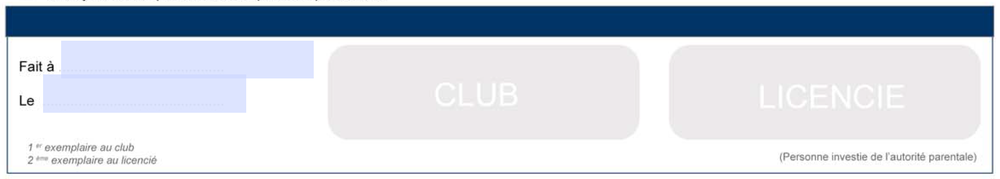

Ce tutoriel vous guide étape par étape pour remplir correctement le formulaire PDF fourni par la Fédération
Française de Natation.
üìù Aide au remplissage du formulaire
Section 1 : Type d'inscription FFN
-
Nouvelle licence :
Si c’est la première année que le nageur s’inscrit dans un club de natation affilié à la FFN, cochez la case
“Nouvelle licence”.
-
Renouvellement :
Si le nageur était inscrit dans le club des Dauphins de Châtellerault l’an dernier, cochez la case
“Renouvellement”.
Indiquez le numéro de licence de l’an dernier (appelé Identifiant Unique Fédéral (IUF)) dans
la zone prévue à cet effet.
-
Transfert :
Si le nageur était inscrit dans un autre club FFN que les Dauphins de Châtellerault l’an dernier, cochez la
case “Transfert” et indiquez le nom de l’ancien club.
Indiquez également le numéro de licence de l’an dernier (IUF).
⚠️ Remplissez soigneusement ces informations, elles sont essentielles pour valider la licence.
Section 2 : Informations personnelles du licencié
-
Nom et prénom :
Indiquez le nom de famille et le prénom du licencié, exactement comme sur ses papiers d’identité.
-
Nationalité :
Précisez la nationalité du licencié.
-
Sexe (H/F) :
Sélectionnez H (homme) ou F (femme) selon le cas.
-
Date de naissance :
Indiquez la date de naissance au format JJ/MM/AAAA.
-
Adresse :
Complétez l’adresse complète du domicile du licencié.
-
Code postal et ville :
Indiquez le code postal et la ville de résidence.
-
E-mail personnel (obligatoire) :
Renseignez une adresse e-mail valide et consultée régulièrement. Elle est indispensable pour la gestion de la
licence.
-
Téléphone :
Indiquez au moins un numéro de téléphone (Tél 01 ou Tél 02) pour pouvoir être contacté facilement.
-
Je suis athlète handisport :
Si le licencié est un(e) athlète handisport, cochez la case correspondante.
-
Recevoir les e-mailings d’information :
Cochez OUI ou NON selon votre choix pour recevoir les e-mails d’information de la FFN et de ses partenaires.
⚠️ Vérifiez bien l’exactitude de ces informations, elles sont indispensables pour l’inscription et la
communication avec le club.
Section 3 : Type de licence
Selon votre situation, reportez-vous à la version du formulaire qui vous concerne.
Pour les adhérents du club : seules les cases suivantes sont à cocher selon votre activité.
Section 3A : Formulaire MAJEUR
Une seule case est à cocher selon votre activité.
-
Natation : dans la colonne Natation pour tous à cocher pour les groupes apprentissage, le perfectionnement ou loisir.
-
Natation : dans la colonne Compétition à cocher uniquement pour les compétiteurs.
-
Nagez Forme Bien-être : à cocher pour l'aquagym.
- Cas particulier : pour les membres du bureau ou les officiels ou encore les entraineurs, remplir l'encadré Encadrement
-
Ne cochez pas les autres cases sauf indication du club.
Questionnaire santé – MAJEUR
-
Vous devez répondre au Questionnaire Santé - FFN Majeurs (QS - FFN Majeurs) dans le
formulaire FFN ou lors de l'inscription via MonClub.
-
Si vous répondez NON à toutes les questions, cochez la case prévue à cet effet sur le
formulaire.
-
Si vous répondez OUI à au moins une question, un certificat médical de moins de 6 mois est
obligatoire pour obtenir la licence (A fournir dans MonClub).
Section 3B : Formulaire MINEUR
Une seule case est à cocher selon votre activité.
-
J’apprends à nager / Aisance aquatique : à cocher si l’enfant est en cours d’apprentissage
de la natation ou dans un groupe d’aisance aquatique.
-
Natation : dans la colonne Compétition à cocher uniquement pour les compétiteurs.
-
Nagez Forme Bien-être : à cocher si l’enfant pratique l’aquagym (activité orientée plaisir,
détente, bien-être).
-
Ne cochez pas les autres cases sauf indication du club.
Questionnaire santé – MINEUR
-
Vous devez répondre au Questionnaire Santé - QS Sport Mineurs avec le mineur concerné.
-
Si vous répondez NON à toutes les questions, cochez la case prévue à cet effet sur le
formulaire.
-
Si vous répondez OUI à au moins une question, un certificat médical de moins de 6 mois est
obligatoire pour obtenir la licence.
-
Après la case du questionnaire santé, deux cases sont proposées uniquement si l’adhésion concerne un enfant inscrit en groupe compétition :
-
Autorise tout prélèvement nécessitant une technique invasive (prise de sang, prélèvement de phanères) lors d’un contrôle antidopage sur l’enfant mineur ou le majeur protégé.
Cette case est à cocher uniquement si vous donnez votre accord pour ce type de prélèvement.
-
Reconnais être informé que l’absence d’autorisation parentale est constitutive d’un refus de se soumettre à ce contrôle et est susceptible d’entraîner des sanctions disciplinaires à son égard.
Cette case permet d’attester que vous avez bien pris connaissance de cette information, même si vous ne donnez pas votre autorisation.
Pensez à bien lire et compléter ces deux points si votre enfant est concerné par la compétition.
Section 4 : Assurance
-
Garantie de base : Cochez OUI. Cette garantie est incluse dans le prix de la licence, il n'y a rien à payer en plus.
-
Garantie complémentaire : Cochez NON. Si vous cochez oui, cette option entraîne un coût supplémentaire pour l’adhérent.
Pour plus de détails, voir la page suivante du formulaire.
⚠️ Si vous souhaitez souscrire à la garantie complémentaire, renseignez-vous bien sur les tarifs et modalités avant de cocher OUI.
Section 5 : Signature

La dernière étape consiste à dater le formulaire et à le signer. Merci de bien signer dans le cadre "LICENCIÉ" à droite, et non en dessous de la date ni dans le cadre “CLUB”.
Plusieurs solutions existent pour signer le formulaire :
-
Impression et signature manuscrite : Imprimez le formulaire, signez-le à la main dans le cadre approprié, puis scannez-le.
-
Signature électronique : Utilisez Adobe reader ou un outil en ligne pour compléter et signer le formulaire directement sur votre ordinateur, par exemple :
Veillez à ce que la signature soit bien positionnée dans le cadre "LICENCIÉ" pour que le formulaire soit accepté.
üíæ √âtape 5 : Enregistrer et ajouter sur MonClub
Une fois le formulaire rempli et signé, enregistrez-le sur votre ordinateur ou smartphone.
Depuis MonClub lors d'une inscription à une formule :
Ajoutez votre formulaire rempli et signé en cliquant sur « choisir un document » puis en sélectionnant le fichier sur votre ordinateur ou smartphone.
Assurez-vous que le document est bien lisible et que les quatre coins sont visibles avant de l'envoyer.